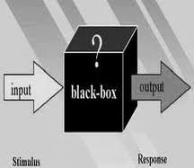

Coding for Views
May 21, 2014
About Me

Will Long
 @Kerasai
@Kerasai Kerasai on D.O
Kerasai on D.O- http://kerasai.com
Following Along
Slides:
http://presentations.kerasai.com/fvdmug-views
Chicago 2013:
https://github.com/kerasai/chicago_2013
FVDMUG Views:
https://github.com/kerasai/fvdmug_views
Objectives
- Cover key aspects of developing with Views
- Provide a working example for experimentation
- Highlight the benefits of extending Views
Agenda
- Define the concepts behind Views
- Review basic Views API
- Analyze common scenarios of Views development
What's a View?
- Query Generator
- Rendering Mechanism
Why Should I Use Views?
I can write SQL.
Because everybody else is!
And they use it because it's awesome!
Do I Need to Know This?
Okay, I'll use Views.
- views_embed_view() works
- I can hack templates
- I've used hook_query_alter()
Where to Start
Plugins
- access
- argument (validation)
- cache
- display
- exposed form
- localization
- pager
- query
- row
- style
Where to Start
Handlers
- area
- argument
- field
- filter
- relationship
- sort
Plugins & Handlers
Views plugins and handlers
utilize OOP/OOD.
Where to Start
Key Hooks:
- hook_views_api()
- hook_views_data()
- hook_views_plugins()
Almost Ready for Code
Tips
- Include your classes in the module's .info
- Turn on Views SQL preview
- Turn of Views caching
Summary
Views is a very powerful mechanism for easily querying and rendering data/content.
If you have custom tables, they can easily be integrated with Views.
Views functionality is easy to extend and customize.